Découvrez ici l'ensemble des œuvres présentées dans cette exposition virtuelle.
Chaque salle explore une thématique différente de l'invisible à travers diverses
formes d'expression artistique.
De la notion d’invisible découle nécessairement l’idée d’un espace inatteignable pour les sens humains. L’invisible, c’est ce qu’on ne peut qu’imaginer car la perception nous en est proscrite. Il peut s’agir de perception visuelle, mais pas uniquement : tant que plusieurs de nos sens ne perçoivent pas quelque chose, cette chose demeure invisible. L’invisible représente ainsi tout ce qui échappe à une perception immédiate, qu’il s’agisse d’états intérieurs, d’émotions, de relations sociales ou de structures mentales qui ne sont pas directement saisissables par la vue seule. Cette invisibilité n’implique pas l’inexistence ; au contraire, elle souligne la présence de réalités actives mais difficiles à représenter. Selon Paul Klee, « l’art ne reproduit pas le visible, il le rend visible ». L’invisible dans l’art constitue alors une remise en question de la mimêsis traditionnelle : au lieu de copier la nature, l’art dévoile, tel un révélateur, ce que notre regard ordinaire ne peut appréhender spontanément, en donnant forme à des aspects cachés de l’expérience humaine ou du monde. Il ouvre ainsi une relation sensible à des phénomènes abstraits, inconscients ou latents qui ne seraient autrement pas accessibles à la conscience seule.
L'idée est alors de comprendre comment l'art révèle ce qui est caché. Trois approches sont intéressantes : comment l'art s'est confronté à l'invisible en tant qu'objet. Puis comment il a tenté de figurer l'invisible en tant que sujet. Enfin comment il s’est confronté aux sujets invisibilisés au sein de nos sociétés ou par des autorités. En somme, qu'est-ce que l'invisible dans l'art ?
Salle 1 : L'inconnaissable
Arrivez-vous vraiment à penser l’invisible ? Pour approcher la notion d’invisible, il faut commencer par accepter sa propre ignorance. On ne peut entièrement saisir ce que l’on ne perçoit pas en premier lieu. Plonger dans l’invisible c’est reconnaître l’inconnaissable, l’inconcevable et l’ensemble des limites de nos organes perceptifs.
L’invisible inconnaissable est une première approche et peut-être la plus évidente car c’est un monde infini de question sans réponse, qui stimule toujours plus la création artistique. L’invisible fascine et l’art est un chasseur qui cherche à capturer son fonctionnement.
Apparaissent alors des œuvres qui existent sans forme clairement perceptible : elles se manifestent par le silence, le vide, l’absence. L’invisible est alors, non pas le contenu de l'œuvre, mais sa forme et son mode opératoire.
Faire de l’art avec comme outil l’invisible est une dynamique proprement contemporaine où souvent les formes artistiques s’effacent et se dématérialisent, menant le spectateur à s’interroger sur la perception et la signification de l’absence. Toutefois avant déjà, certaines traditions artistiques et spirituelles font de l’absence un principe structurant.
Le concept du ma dans l’esthétique japonaise s’inscrit dans cette tradition et les pratiques aniconiques, soit l’absence de l’image figurative, sont une manière de préserver ce qui ne peut pas être réduit à une forme visible ; le divin, l’absolu ou le sacré s’y manifestent précisément par ce qui n’est pas montré.
L'imperceptible
Là où nos sens ne peuvent plus accéder commence l’invisible. L’invisible, simplement comme ce que l’on ne peut pas percevoir. Une notion théorisée par Duchamp nous offre une voie d’exploration : l’inframince. Est inframince ce qui est à peine perceptible, à peine repérable, ce qui représente une différence infime et singularisante. L’inframince relève de l’imperceptible pourtant perçu, il entre en rapport avec l’infiniment petit et la nuance. Aujourd’hui, les artistes contemporains se sont largement emparé cette question et font exister avec ironie l’intangible dans le tangible.
L'inframince
"Série de gaz inerte/hélium, néon, argon, krypton, xénon/d'un volume volume à une expansion indéfinie" - Typographie, 1969
"4'33'' (In Proportional Notation)" - Encre sur papier, 1952/1953
Explication pour les enfants
"Le Vide" - Photographie, 1958
👋 Attention à ton tour de jouer, sois bien attentif ☝️🤓
Tu as pu remarquer que l'on parle de ce que tu ne peux pas percevoir dans cette partie, ça peut être dû à plusieurs sens.
Dans chacune des œuvres suivantes, quels sens ne sont pas nécessaires à celles-ci (ouïe, vue, toucher, l'odorat, le goût)? 👂👀✋👃😝
🥁 roulement de tambours
As-tu deviné ?
Pour 4'33", c'est l'ouïe
Pour Inert Gas Series/Helium, c'est la vue, l'ouïe, le toucher, l'odorat, le goût (ça fait beaucoup !)
Pour The Void, c'est le toucher et la vue (on peut entendre parler de l'exposition mais pas la voir)
Pour Generator, c'est la vue et l'ouïe
Bravo à toi ! On se revoit à la prochaine salle 😀
4'33''
Composition, John Cage, 1952, États-Unis, durée : 4 min 33 s, MoMA, New York
4'33" est une composition de John Cage qui se compose de quatre minutes et trente-trois secondes de silence. Elle a été jouée pour la première fois en 1952 et est largement considérée comme l'un des morceaux de musique les plus importants du XXe siècle. Cette pièce est de défie l'idée conventionnelle de ce qu'est la musique et souligne l'importance des sons présents dans l'environnement de l'auditeur, par opposition à une composition obligatoirement composée par le musicien c'est le public qui crée le morceau. Pendant 4 minutes et 33 secondes, Cage invite les interprètes et le public à écouter les sons qui se produisent en dehors de la musique, et encourage chacun à faire l'expérience de son environnement à travers la musique. 4’33’’ est une révolution du monde de la musique, celle du discours invisible et nombreuses des œuvres de cette salle en ont fait une inspiration absolue.
Inert Gas Series/Helium, Neon, Argon, Krypton, Xenon/From a Measured Volume to Indefinite Expansion
Typographie, Robert Barry, 1969, États-Unis, dimensions variables, collections et documentation diverses
Ceci est le poster d’invitation pour une œuvre sans lieu ni date, à peine existante. Pour la réaliser, Robert Barry a libéré cinq volumes de gaz rares, inodores et incolores, dans l'atmosphère de divers endroits autour de Los Angeles. Une réalisation complètement invisible, pour une œuvre qui, comme l’artiste Ian Wilson dont les performances n’existaient que par un certificat de réalisation, n’a comme preuve tangible que cette affiche. Pour citer le marchand d'art new-yorkais Seth Siegelaub : « Il a fait quelque chose qui change indéniablement le monde, même de façon imperceptible. Il a introduit quelque chose dans le monde, mais on ne peut ni le voir ni le mesurer. Quelque chose de réel, mais d'imperceptible. »
Le 28 avril 1958, l’artiste français Yves Klein ouvre sa première exposition à la galerie Iris Clert à Paris. Le spectacle, appelé « La spécialisation de la sensibilité à l’état de matière première en sensibilité en stabilisale picturale, Le Vide » a eu lieu dans une galerie de moins de 20m2 complètement vidée : tous les objets ont été retirés de l’espace de la galerie en dehors d’une vitrine et tous les murs ont été peints en blanc par l’artiste lui-même. Pendant 48 heures Klein expose l’invisible. Peu de temps après, l’artiste Arman prendra son contrepied en créant l’exposition « Le Plein », où il remplira la galerie jusqu’à en empêcher l’entrée.
Évoluer dans l'imperceptible
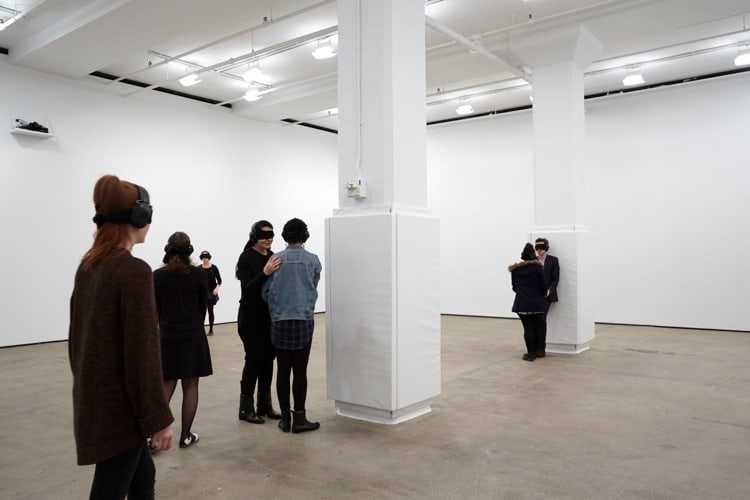
"Generator" - Installation interactive, 1990
"The lightning field" - Installation permanente (photographie), 400 mâts en acier inoxydable, 1977
Dans son œuvre, Marina Abramovic invite le public à arpenter une pièce, les yeux bandés et les oreilles couvertes, complètement privé de la vue ou de l’ouïe. Le spectateur, désormais lui-même œuvre, est perdu dans une notion centrale du travail d’Abramovic: la nothingness, ou en français le néant. Telle que l’artiste le dit : “Le plus compliqué est de faire quelque chose qui est proche de ne rien faire”. Generator est une oeuvre réflexive, qui place le participant dans une position de vulnérabilité dans cet espace invisible où le seul refuge est l’esprit. C’est une délicate entrée dans un monde inconnu, une invitation à trouver l’autre dans le vide.
The lightning field
Installation environnementale permanente (Photographie), 400 mâts en acier inoxydable, Walter De Maria, 1977, États-Unis, 400 mâts en acier inoxydable sur 1 mile × 1 km, Dia Art Foundation
La réflexion de Marina Abramovic autour de l’expérience sensorielle dans le paysage se retrouve dans cette oeuvre de land art par Walter de Maria, une série de poteaux en acier inoxydable dont les surfaces réfléchissantes capturent et amplifient la lumière à la fois du soleil et des tempêtes électriques, créant une connexion éphémère entre la terre et le ciel. Influencée par la phénoménologie de Merleau-Ponty, elle met l’accent sur une expérience sensible qui dépasse le cadre de la « pure visibilité ».
Invisible
Installation conceptuelle, Giovanni Anselmo, 1971, Italie, dimensions variables, collections et archives de l’artiste
"[…] Avec cette projection intitulée Invisible, j’ai souhaité réaliser une œuvre invisible. Le projecteur projette, à une distance d’un mètre ou un peu plus, l'image d’une diapositive sur laquelle est écrit le mot « VISIBILE ». La projection est réalisée en champ ouvert, c’est-à-dire sans écrans intermédiaires, et le texte n’est pas visible car il est projeté dans l’air. Le point lumineux qui apparaît au loin est une sorte de rappel qui nous invite à vérifier l’invisible. En interceptant la projection avec le corps au point de focalisation, l’inscription « VISIBILE » apparaît, car la main ou le bras qui, par exemple, fait office d’écran, est effectivement visible. L’invisible est le visible qui ne peut être vu. Par conséquent, si j’ai créé une œuvre invisible, je n’ai pu le faire qu’en créant en dernière instance une œuvre visible."
Giovanni Anselmo
Camouflage
"La Condition Humaine" - huile sur toile, 1933
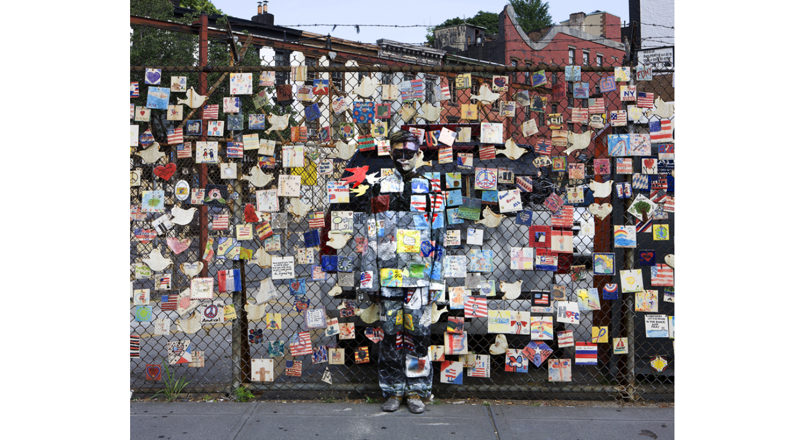
"Hiding in New York No. 4 – Ground Zero", Photographie, 2005
Gilbert & George - Photographie couleur, Gilbert & George, années 1990–2000
La Condition humaine
Peinture, huile sur toile, René Magritte, 1933, Belgique, 100 × 81 cm, National Gallery of Art, Washington, n° d’inv. 1987.45.1
Hiding In New York No. 4 - Ground Zero
Installation environnementale permanente (Photographie), 400 mâts en acier inoxydable, Walter De Maria, 1977, États-Unis, 400 mâts en acier inoxydable sur 1 mile × 1 km, Dia Art Foundation
Un homme se cache sur cette image, saurez-vous le trouver ?
Gilbert et Georges
Photographie couleur, Gilbert & George, années 1990–2000, Royaume-Uni, dimensions variables, collections publiques et privées
Gilbert & George sont deux artistes plasticiens britanniques travaillant en couple. Depuis quarante ans, ils se considèrent comme des "sculptures vivantes" et vivent leur art dans leur chair. Les costumes d'hommes d'affaires qu'ils ont portés pour leurs performances sont devenus une sorte d'uniforme pour eux, et ils apparaissent rarement en public sans les porter. Il est pratiquement impossible de voir l'un sans l'autre et refusent de dissocier leurs performances de leur vie quotidienne, insistant sur le fait que tout ce qu'ils font est art. Ils s’inscrivent dans une question inhérente à l’invisible dans l’art : où est l’œuvre ? Quand l’art se prête à une partie de cache-cache, camouflé dans son environnement comme Matisse ou Liu Bolin ou perdu dans un quotidien effréné comme chez Gilbert et Georges. Dérivé du théâtre de l’invisible, leur art est basé sur la vie, c’est le contraire de l’art pour l’art.
L'absence comme présence
« Le propre du visible est d’avoir une doublure d’invisible au sens strict, qu’il rend présent comme une certaine absence. » Maurice Merleau-Ponty. En d’autres termes, toute construction du visible, toute présence iconique, toute représentation implique une part d’invisible, une forme d’absence ou une présence plus réelle encore, hors champ, que celle de l’image définie traditionnellement comme visible. Inverser cette dynamique c’est utiliser cette absence comme sujet. Comment la disparition peut-elle devenir l'autre nom de la manifestation ? Comment l'oeuvre peut-elle être là sans insister sur sa présence ? Lorsque l’absence devient une présence, l’invisible devient un manque que l’on cherche désespérément à combler.
L'aniconisme
L’art a été avant tout mobilisé par le besoin de représenter le divin, de rendre sensible ce qui dépasse l’entendement humain. Représenter le sacré implique alors une tension : comment donner forme à ce qui, par définition, excède toute forme ? Face à cela, dans certaines traditions, l’art religieux renonce à la figuration, comme en témoigne les traditions aniconiques de l’Islam ou de l’Hindouisme, pratique consistant à éviter la représentation des icônes religieuses afin d’éviter l’idolâtrie et de maintenir le culte centré uniquement sur le divin. Cette non-figuration permet au divin et sa grandeur de se manifester précisément par ce qui n’est pas montré.
"Liṅga (symbole de Śiva)", Sculpture rituelle, pierre, date indéterminée
"Miḥrāb", Revêtement architectural, carreaux de céramique émaillée à décor épigraphique, XVIIᵉ siècle
Liṅga (symbole de Śiva)
Sculpture rituelle, pierre, Inde, date indéterminée, dimensions variables, The Metropolitan Museum of Art, New York, n° d’inv. 1993.547
Le linga est une forme non figurative du Shiva, l’un des trois dieux primordiaux hindous. Cette sculpture symbolise la puissance créatrice et la présence du dieu sans lui donner une figure humaine. L’absence d’image traduit ici une volonté de préserver l’irréductibilité du sacré, en refusant de l’enfermer dans une représentation.
Miḥrāb
Revêtement architectural, carreaux de céramique émaillée à décor épigraphique, Iran (probablement Ispahan), XVIIᵉ siècle, dimensions variables, The Metropolitan Museum of Art, New York, n° d’inv. 10.9
Dans l’art islamique, il existe une forte tradition de l’aniconisme ; au lieu de peintures ou de statues, l’art islamique est connu pour ses motifs géométriques complexes et sa calligraphie. Ces formes d’art visent à traduire la nature infinie d’Allah et la beauté de la création sans montrer aucune figure humaine.
Ce mihrab, composante importante de la mosquée dont l’emplacement indique la direction de La Mecque, vient de la Madrasa Imami d’Ispahan est décoré d’une mosaïque de petits carreaux glaçurés et assemblés de manière à former des motifs et des inscriptions.
La philosophie du Ma
"Paysage de montagne", Paire de paravents à six feuilles; encre et couleur sur papier, début–milieu du XVe sièclem
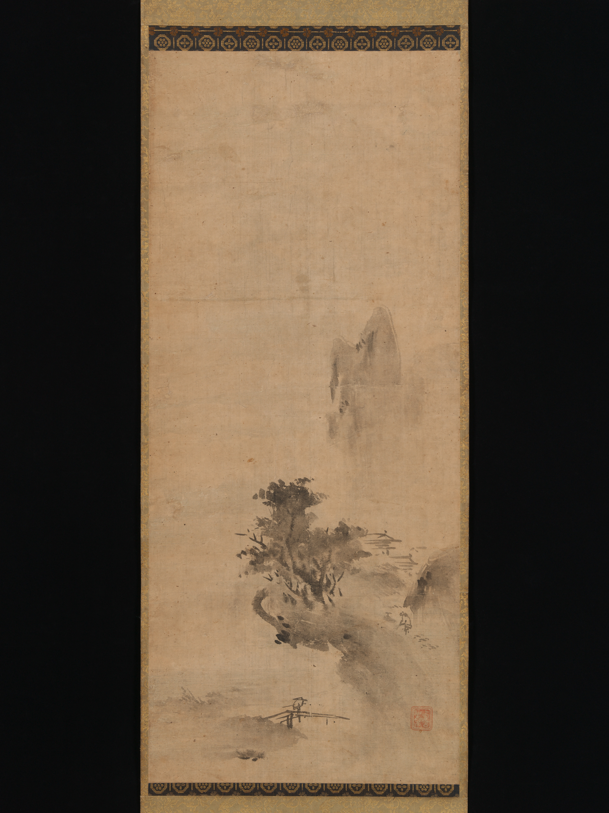
"Paysage à l'encre éclabousée", Rouleau suspendu (kakemono); encre sur papier, début du XVIe siècle,
Paysage de montagne
Paire de paravents à six feuilles; encre et couleur sur papier, Traditionally attributed to Tenshō Shūbun, Japon, début–milieu du XVe siècle, 154 × 290 cm (au total), The Metropolitan Museum of Art, New York, n° d’inv. 2015.300.51.1–.2
Paysage à l'encre éclabousée
Rouleau suspendu (kakemono); encre sur papier, Bokushō Shūshō, Japon, début du XVIe siècle, 80 × 33.9 cm (image), The Metropolitan Museum of Art, New York, n° d’inv. 2015.300.55
Cette peinture évocatrice de Bokushō est une variation sur un paysage célèbre dans la technique de l'haboku (encre éclaboussée) par le grand maître Sesshū Tōyō (1420-1506. La technique, appliquer l’encre rapidement sur des lavages légers encore humides pour créer un effet doux et diffusé, avec ni lignes de contour bien définies ni détails explicites, évoque un état d’esprit intuitif et contemplatif associé à la pratique spirituelle bouddhiste zen et à la philosophie Ma. Au Japon, le mot Ma exprime un espace vide compris entre deux choses. Ce vide est la vraie réalité, il est le contraire du néant tel que nous le concevons. Il est l’énergie qui unit par exemple deux atomes entre eux. Toute énergie subtile est forcément invisible, mais les choses ne coexistent et n’existent que pas sa puissance qui unit chaque particule, chaque atome et tous les mondes.
Negative Space
En art, en musique et en photographie, l'espace vide n'est pas rien. On l'appelle l'espace négatif. Il s'agit de l'espace vide autour et entre le sujet d'une image. Le sujet lui-même est appelé espace positif : la figure, l'objet ou l'élément principal. Tout ce qui l'entoure, l'espace inutilisé, est l'espace négatif. Dans le tracé d’un cercle, on retrouve par exemple cet espace creux, un manque d’existence qui crée un équilibre, un invisible sans qui le visible n’aurait pas de sens. L’absence devient alors présence, lorsque l’invisible se met au service du visible.
"L'art de la performance : théorie et pratique" – Performance, 1988
Negative Space
Earthwork (excavation monumentale), Michael Heizer, 1969–1970, États-Unis (Mormon Mesa, Nevada), 457 m de longueur totale (deux tranchées opposées), Museum of Contemporary Art (MOCA), Los Angeles, Crédits photo : Google Search
« Double négatif », est une œuvre fondamentale au sein du mouvement environnemental du land art. Elle présente deux tranchées massives découpées dans le bord oriental de la Mesa mormone dans le Nevada, aux États-Unis, incarnant l'interaction entre les paysages naturels et l'intervention humaine. Parfaite représentation de l’espace négatif, le spectateur voit dans le creux la roche qui fût un jour présente.
L'art de la performance : théorie et pratique
Performance, Esther Ferrer, 1988, Berlin
Cette vidéo est la captation d’une représentation de « L’art de la performance : théorie et pratique » réalisée par Esther Ferrer à Berlin. Dans cette performance, elle donne une conférence complètement muette, articulant un propos concret mais inaudible, à l’exception du mot « performance » qu’elle scande occasionnellement, interrompant son silence. Entre chaque interruption, des lignes silencieuses se forment qui sont autant de vides ou d’espaces à traverser, à penser pour le spectateur. On retrouve dans son travail l’écho de 4’33’’, elle partage avec John Cage ce besoin de faire entendre le monde dans la disparition du discours. Son manque, cet espace négatif devient alors une présence puissante et invincible.
Après avoir exploré les œuvres où l'invisible devient le cœur même de l'art, un espace d'absence et d'imperceptibilité qui invite le spectateur à combler le vide, cette deuxième salle se focalise sur un défi fondamental de l'art : rendre visible l'invisible.
Ici, l'invisible désigne ce qui échappe à nos sens ; qu'il s'agisse de forces spirituelles ou d'états intérieurs, l'art les illustre en formes tangibles. En figurant ainsi l'invisible, les œuvres transforment et humanisent le mystère en une expérience accessible, rassurante ou introspective.
Nous explorons d'abord la figuration du divin, des esprits et du paranormal, où l'art donne corps à des entités invisibles : des divinités bouddhistes stylisées avec des attributs symboliques qui les rendent reconnaissables et accessibles au VIe siècle, aux photographies d'esprits qui matérialisent le paranormal au XIXe. Ensuite, nous verrons des œuvres qui cherchent à figurer l'intériorité et le rêve où l'invisible est psychique ; de la figuration de l'âme en contemplation, à celle des univers imaginaires de l'inconscient et du rêve, nous verrons comment l'art révèle ces dimensions cachées.
Figurer le divin et le spirituel
Le divin
Comme nous l'avons vu, figurer le divin est l'un des premiers rôles assignés à l'art. Dans cette section nous explorons un art qui, contrairement aux traditions aniconiques, cherche à donner une figure humaine aux entités invisibles et inconcevables, afin de les mettre à la portée de l'être humain. De la peinture chrétienne médiévale aux traditions bouddhistes et islamiques, ces images rendent possible une proximité entre l'humain et le divin, en inscrivant l'invisible dans le visible.
"Triptyque de l'Annonciation" - Huile sur chêne, 1427-32
"Bouddha offrant sa protection" - Alliage de cuivre, VIe-VIIe siècle
"Le Mi'raj ou le vol nocturne de Mohammed sur son destrier Buraq" - Miniature persane, ~1525-35
"Triptyque avec le Mandylion" - Argent, partiellement doré, 1637
"Ange de la présence divine amenant Ève à Adam" - Aquarelle, 1803
Triptyque de l'Annonciation
Peinture, Huile sur chêne, Robert Campin, 1427-32, Pays-Bas, 64.5 × 117.8 cm, The Met, 56.70a–c
Dans le contexte de la devotio moderna et de l'ars nova, la peinture sacrée adopte un langage nouveau, fondé sur l'humilité et la proximité. L'œuvre, peint par le Flamand Robert Campin, illustre cette démarche : l'Annonciation se déroule dans un intérieur domestique évoquant les maisons flamandes. L'échange entre l'ange Gabriel et Marie met en scène l'interaction entre le divin et le terrestre une conversation sacrée, tandis que les donateurs et saint Joseph encadrent la scène.
Bouddha offrant sa protection
Sculpture, Alliage de cuivre, Artiste inconnu, VIe-VIIe siècle, Inde, 47 × 15.6 cm, The Met, 69.222
Cette tendance à représenter le Bouddha sous une forme aniconique se poursuit jusqu'après le tournant du Ier siècle de notre ère, avant l'essor du bouddhisme mahayana, qui voit apparaître des images anthropomorphes du Bouddha, notamment dans la région du Gandhara pendant la période Kushana. Elles marquent le début d'une nouvelle phase de l'art bouddhiste, dans laquelle les artistes transmettent le sens à travers la représentation de marques corporelles spéciales (lakshanas) et de gestes des mains (mudras) du Bouddha. Cette statue d'influences gréco-bouddhistes représente le Bouddha en abhaya mudra, geste de protection, donnant une forme humaine à l'être éclairé avec un corps stylisé. L'œuvre rend ici visible l'état du nirvana et de la transcendance spirituelle, humanisant le chemin vers l'éveil pour le rendre concevable aux fidèles.
Le Mi'raj ou le vol nocturne de Mohammed sur son destrier Buraq
Miniature, Encre, or et couleurs sur papier, Sultan Muhammad Nur, environ 1525-35, Ouzbékistan ou Afghanistan actuels, 27.9 × 18.4 cm, The Met, 1974.294.2
Malgré la prédominance de l'aniconisme dans l'art islamique, cette miniature persane figure le prophète Mohammed. Elle représente l'épisode du Mi'raj, l'ascension céleste du prophète guidé par l'ange Gabriel. Mohammed, le visage dévoilé, est porté par Buraq, une figure ailée à visage humain, et entouré d'anges.
Triptyque avec le Mandylion
Objet religieux, Argent, partiellement doré, niello, bois, Peintre russe, 1637, Russie, 68.6 × 90.8 × 12.7 cm, The Met, 1975.87
Ce triptyque rend hommage à l'image du fameux Mandylion, une représentation de Jésus issus d'une image acheiropoïète, "non faite des mains de l'homme, mais du divin". Selon la tradition, le Mandylion serait né lorsque le Christ aurait laissé l'empreinte de son visage sur un linge en s'essuyant durant son chemin vers le Calvaire. Cette image aurait ensuite acquis une valeur protectrice pour le royaume d'Édesse, avant d'être transférée à Constantinople en 944. De cette légende née une nouvelle tradition visuelle, celle de l'icône à la barbe mouillée. La multiplication de ces images a créé une tradition de figuration iconique permettant aux artistes de plus facilement représenter les êtres divins.
Ange de la présence divine amenant Ève à Adam (La création d'Ève : « Et elle sera appelée femme »)
Aquarelle, stylo et encre noire, sur graphite, William Blake, 1803, Grande-Bretagne, 41.6 × 33.2 cm, The Met, 06.1322.2
William Blake, figure majeure du romantisme en Europe, rejette le rationalisme de son époque et puise son inspiration dans la Bible et dans une expérience spirituelle profondément personnelle. Dans cette aquarelle, il interprète la création d'Ève en plaçant au centre une figure angélique suspendue et rayonnante qui introduit Ève et Adam dans une atmosphère transcendante.
Les esprits et le paranormal
Dans cette section, l'art révèle une zone où les morts continuent à hanter le monde des vivants. Les esprits y apparaissent comme des présences persistantes ou perturbatrices, révélant des conceptions culturelles différentes de l'au-delà.
"L'acteur de Kabuki Arashi Rikan II" - Gravure sur bois, 1832
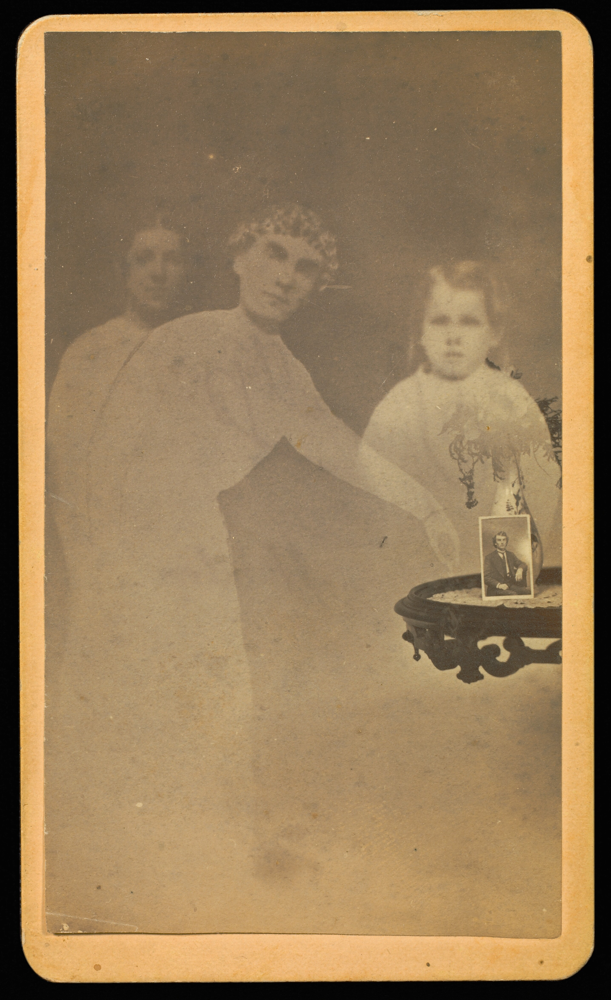
"Three Spirits with Photograph on Table" - Photographie, 1862-75
"Fanny Conant with Spirit Arms" - Photographie, 1870-75
"Unidentified Man Seated with Three Spirits" - Photographie, 1862-75
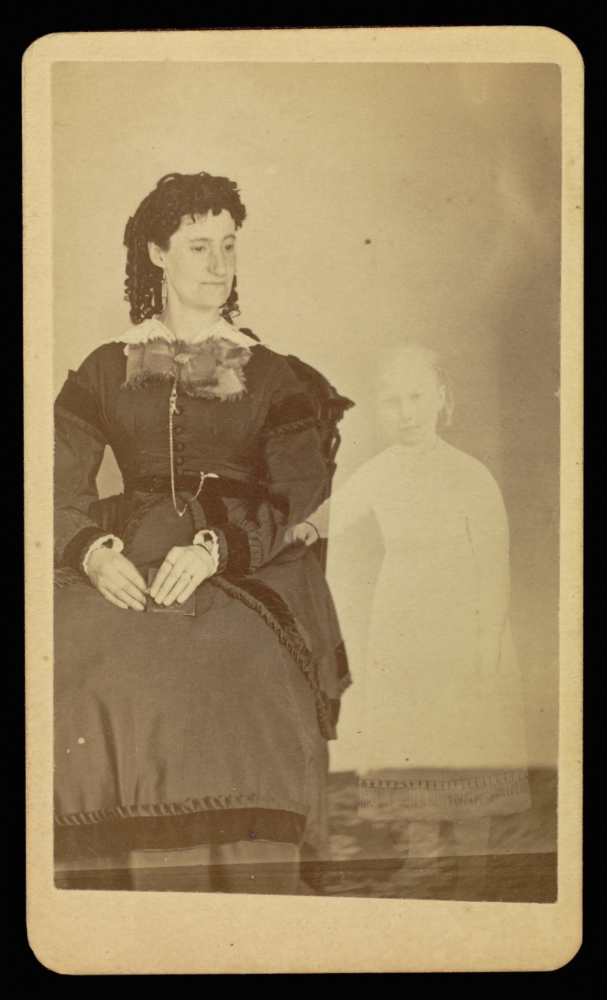
"Mrs. Tinkman with the Spirit of Her Child" - Photographie, 1870-75
À la faveur du deuil massif provoqué par la guerre de Sécession, les portraits « d'esprits » deviennent un genre commercial. La photographie est utilisée ici comme preuve technique : un cliché poserait la trace du défunt à côté du corps vivant. Ces images circulent en format carte-de-visite et sont largement diffusées par le marché du souvenir. Elles incarnent la promesse moderniste que la machine photographique pourrait « voir » au-delà des sens humains. William H. Mumler, photographe américain, popularise des images où des silhouettes semblent apparaître derrière les personnes.
L'acteur de Kabuki Arashi Rikan II dans le rôle d'Iemon confronté à une image de sa femme assassinée
Estampe, Gravure sur bois ; encre et couleur sur papier, Shunbaisai Hokuei, 1832, Japon, 37.8 × 25.7 cm, The Met, 2011.135
Les figures spectrales du yūrei se caractérisent par des corps partiellement transparents, des vêtements flottants et des postures qui défient les lois du monde visible. Ici, l'estampe de Shunbaisai Hokuei met en scène un acteur de kabuki confronté à l'apparition du spectre de sa femme assassinée, Oiwa, projetée sur une lanterne brisée qui hante et inspire la crainte. Issu du genre yūrei-zu, les images de fantômes du folklore japonais, ce type de représentation visuelle surgit des jeux de récits populaires, notamment Hyaku monogatari, où l'on racontait des histoires de fantômes lors de rassemblements nocturnes.
Three Spirits with Photograph on Table (Trois Esprits avec Photographie sur Table)
Photographie, Tirage albuminé argenté à partir d'un négatif sur verre, William Mumler, 1862-75, États-Unis, 9.5 × 5.7 cm, The Met, Numéro non spécifié
Fanny Conant with Spirit Arms and Hands Showering Her with Flowers (Fanny Conant avec des bras et des mains spirituels la inondant de fleurs)
Photographie, Tirage albuminé argenté à partir d'un négatif sur verre, William Mumler, 1870-75, États-Unis, 9.5 × 5.7 cm, The Met, Numéro non spécifié
Unidentified Man Seated with Three Spirits (Homme non identifié assis avec trois esprits)
Photographie, Tirage albuminé argenté à partir d'un négatif sur verre, William Mumler, 1862-75, États-Unis, 9.5 × 5.7 cm, The Met, Numéro non spécifié
Mrs. Tinkman with the Spirit of Her Child (Mme Tinkman avec l'Esprit de son Enfant)
Photographie, Tirage albuminé argenté à partir d'un négatif sur verre, William Mumler, 1870-75, États-Unis, 9.5 × 5.7 cm, The Met, Numéro non spécifié
Figurer l'intériorité
L'âme
Dans cette quête pour donner forme à l'invisible, l'artiste se réfugie dans son intériorité, en puisant inspiration dans l'intangible de l'expérience humaine, et révélant l'âme comme un espace de contemplation.
Explication pour les enfants
La Madeleine aux deux flammes
Peinture, Huile sur toile, Georges de La Tour, ~1640, France, 133.4 × 102.2 cm, The Met, 1978.517
Cette peinture représente Marie-Madeleine en contemplation renonçant aux plaisirs charnels pour une vie de pénitence. Le miroir symbolise la vanité, le crâne la mortalité, et la bougie l'illumination spirituelle. Georges de La Tour, qualifié de « peintre de la vie spirituelle », utilise la lumière pour révéler les profondeurs de l'âme, transformant l'intériorité en une expérience tangible et introspective.
👋 Attention à ton tour de jouer, sois bien attentif ☝️🤓
Une ou deux flammes ? Combien en vois-tu ? 🤔
Tu serais tenté de répondre 2 puisque c’est écrit dans le titre. Mais la deuxième flamme correspond en fait au reflet de la première, même si elle a l’air un peu différente de l’autre.
Pourquoi est-elle si mise en avant ?
C’est un complexe mais c’est parce que les deux flammes ont deux sens différents 🤯
La flamme réelle éclaire le monde visible, celui des objets et de la vie quotidienne.
Le reflet, lui, symbolise le monde intérieur de Madeleine : ses pensées, sa foi et sa méditation, elle ne regarde d’ailleurs que lui dans le miroir.
Bravo tu as appris plein de nouveaux truc, à la prochaine 😀
Le rêve
La figuration du rêve permet d'explorer l'invisible psychique, où les forces inconscientes défient la logique et les lois de la physique.
"The Eye like a Strange Balloon Mounts toward Infinity" - Lithographie, 1882
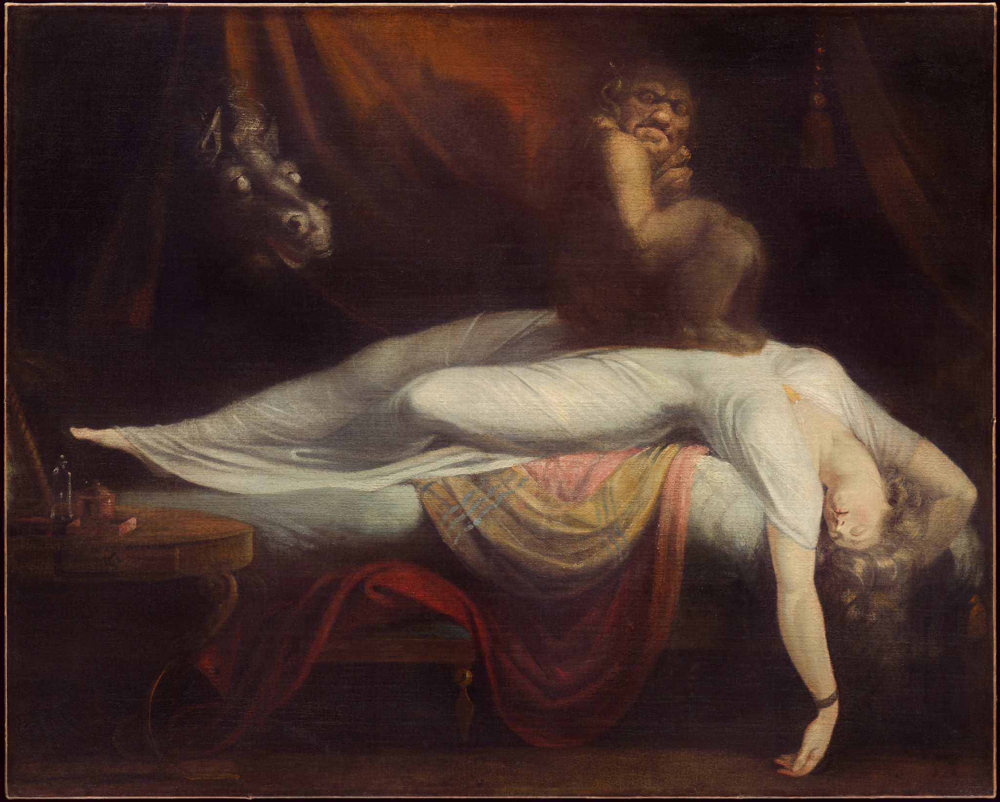
"The Nightmare" - Huile sur toile, 1781
The Eye like a Strange Balloon Mounts toward Infinity (L'Œil, comme un ballon bizarre se dirige vers l'infini)
Lithographie, Lithographie, Odilon Redon, 1882, France, 45 × 31.6 cm, MoMA, 377.1958
Odilon Redon, rejetant le naturalisme et l'observation directe du réalisme et de l'impressionnisme, affirme la supériorité de l'imagination comme chemin vers des réalités invisibles. Cette lithographie, issue de sa série Dans le Rêve, représente un œil monumental flottant dans l'espace comme un 'ballon étrange', et fait surgir le monde onirique libéré des contraintes matérielles.
The Nightmare
Peinture, Huile sur toile, Johann Heinrich Füssli, 1781, Suisse, 101.7 × 127.1 cm, Detroit Institute of Arts, 55.5.A
Cette œuvre représente une femme allongée sur son lit, avec un démon assis sur sa poitrine, baignée de lumière. Ce dernier fixe le spectateur, tandis que depuis le sombre arrière-plan un cheval regarde la scène avec des yeux exorbités. Füssli, s'inspirant de William Blake, s'inscrit dans le mouvement romantique, qui cherche au XVIIIe siècle à substituer l'emprise croissante du visible et de la réalité extérieure par la vision et le recours à l'imagination. Cette exploration du mystère psychique ouvre directement la voie aux mouvements du XXe siècle, notamment le surréalisme, qui s'engage dans les « ombres irrationnelles de l'inconscient ».
L'inconscient
Ces œuvres sondent l'inconscient et les crises intimes. Les artistes explorent l'inconscient, les désirs et les expériences intimes, donnant forme à ce qui échappe à la conscience.
"Madonna" - Lithographie et gravure sur bois, 1895-1902
"Autorretrato con Pelo Corto" - Huile sur toile, 1940
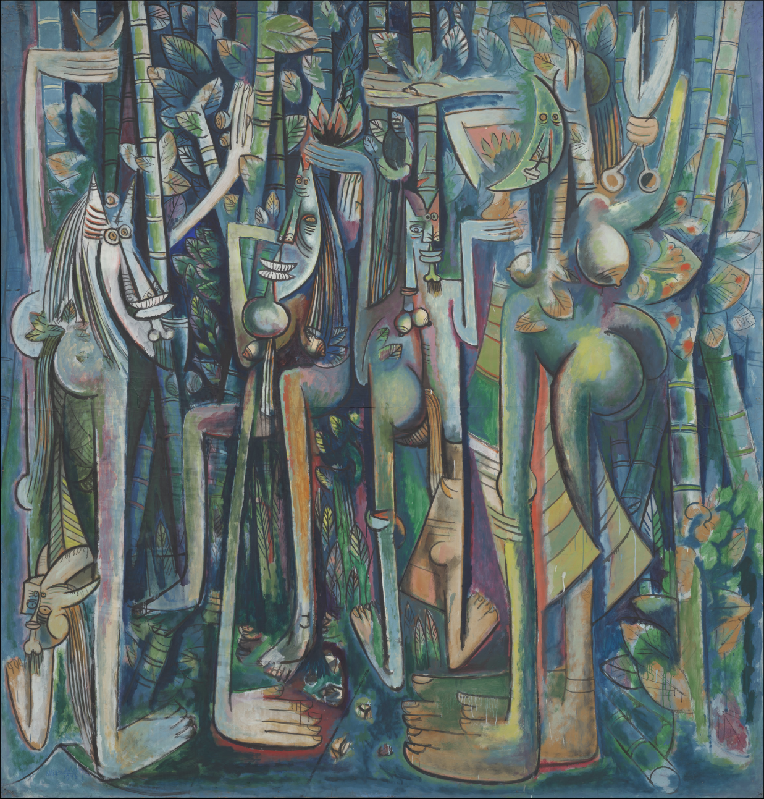
"La Jungla" - Huile et fusain sur papier, 1942-1943
Madonna
Estampe, Lithographie et gravure sur bois, Edvard Munch, 1895-1902, Norvège, 85.6 × 59.3 cm, MoMA, 114.1956
Avec Madonna, Munch transforme l'image traditionnelle de la Vierge en une figure à la fois sensuelle et métaphysique. La femme nue, les yeux clos, la tête renversée et les cheveux flottants semble en état d'extase, mais cette extase est ambivalente, oscillant entre jouissance et douleur. L'auréole rouge qui l'entoure remplace l'auréole dorée chrétienne et associe sainteté et sexualité. Par la simplification des formes, le mouvement du l'arrière-plan et la tension entre sacré et érotisme, Munch ne peint pas un épisode religieux mais un état intérieur : la confusion du désir, de la culpabilité et de l'angoisse existentielle.
Autorretrato con Pelo Corto (Autoportrait avec cheveux courts)
Peinture, Huile sur toile, Frida Kahlo, 1940, Mexique, 40 × 27.9 cm, MoMA, 3.1943
Dans cet autoportrait, Frida Kahlo se représente seule, avec cheveux courts et vêtue d'un costume masculin. Des mèches de cheveux recouvrent le sol et elle tient des ciseaux. En se représentant par ces traits androgynes, elle rend visible un moment de rupture identitaire et affective liée à son divorce avec Diego Rivera et pourrait être une référence à sa bisexualité. La phrase de la chanson populaire (« si je t'aimais, c'était pour tes cheveux… ») inscrit le tableau dans un dialogue implicite avec l'ancien amant, mais le regard frontal de Kahlo affirme une subjectivité qui ne se réduit plus au désir de l'autre. L'artiste fait donc ici du portrait le lieu où la solitude, la douleur et la perte prennent une forme concrète.
La Jungla (La Jungle)
Peinture, Huile et fusain sur papier monté sur toile, Wifredo Lam, 1942-1943, Cuba, 239.4 × 229.9 cm, MoMA, 140.1945
Inspiré par le surréalisme mais profondément enraciné dans les spiritualités afro-cubaines, Lam ne cherche pas à représenter un rêve individuel, mais à rendre perceptible un inconscient collectif façonné par l'histoire coloniale et les rituels ancestraux. Avec La Jungla, l'invisible cesse d'être uniquement intérieur ou spirituel. Ce que Lam rend perceptible n'est pas seulement un monde invisible, mais un monde rendu invisible. Cette bascule marque le passage vers la troisième salle de l'exposition, où l'art dévoile ce que la société choisit de ne pas voir.
Salle 3 : Invisibilisé par …
Cette troisième salle explore une autre forme de l’invisible : celui qui n’est pas accidentel, mais produit, organisé, parfois imposé. Ici, l’invisibilité naît du regard social et du pouvoir des autorités, qui décident ce qui peut être montré, dit ou désiré.
Dans un premier temps, la salle interroge l’invisible façonné par la société. La sexualité et l’homoérotisation apparaissent comme des espaces longtemps relégués à l’ombre, tolérés seulement lorsqu’ils restent discrets ou codés. La mode, en déconstruisant les normes de genre et de corps, devient un langage subversif, révélant ce que les conventions cherchent à masquer. Le sacrilège, quant à lui, expose les limites du dicible face au religieux, tandis que l’allégorie de la débauche et du plaisir met en scène ce que la morale condamne mais ne cesse de fasciner.
La seconde partie se concentre sur l’invisibilité imposée par les autorités. Les femmes, effacées de l’histoire officielle et des représentations, y retrouvent une présence longtemps niée. Les pouvoirs coloniaux révèlent comment l’invisibilisation devient un outil de domination, réduisant des peuples entiers au silence. Enfin, la rébellion surgit comme une réponse : rendre visible ce qui devait rester caché, transformer l’ombre en acte de résistance.
Cette salle invite à regarder autrement ce qui a été dissimulé, censuré ou marginalisé, et à questionner les forces qui façonnent notre perception du visible et de l’invisible.
La société
Sexualité et homoérotisation
Pour ouvrir cette partie relatant des tabous au sein de la société, penchons-nous tout d'abord sur le sujet de l'homoérotisation, le désir et la sexualité. Un sujet qui fut et est encore peu abordé et représenté car il constitue une forme d'interdiction imposée par des sociétés ou des cultures. Leur représentation artistique demeure ainsi rare, souvent dissimulée derrière des codes, des symboles ou des ambiguïtés visuelles. Nous nous sommes dans cette partie intéressés aux tabous liés à l'homoérotisation de figures féminines et masculines et plus particulièrement de la sexualité en général en Asie, mais également celle liée à des personnages antiques dont les interprétations ont été en partie invisibilisées par les sociétés postérieures.
"Sans titre" - Photographie, 1971
"Bustes face à face de l'empereur Hadrien et de son favori Antinoüs" - Travail de lapidaire, milieu-XVIIIe siècle
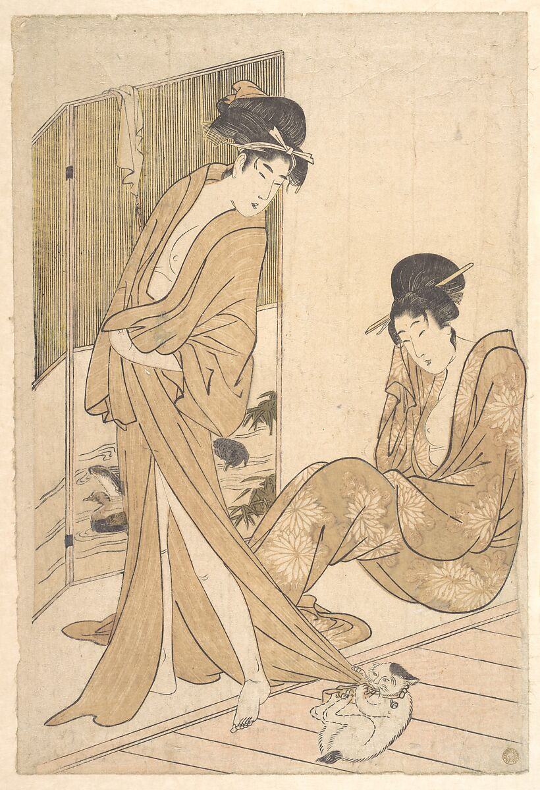
"Deux jeunes femmes enveloppées dans un yukata après le bain" - Gravure sur bois, ~1796
Sans titre
Photographie, Gelatin silver print, Kohei Yoshiyuki, 1971, Japon, 31.3 × 46.6 cm, The Met, 2011.101
La photographie et les arts graphiques et visuels en général révèlent eux aussi cette invisibilité sociale au public, par exemple en dévoilant des invisibles ruraux ou urbains marginalisés par la société. C'est l'idée qu'a voulu nous transmettre Kohei Yoshiyuki, photographe japonais, qui capturait à l'aide de film infrarouge et un flash filtré des images nocturnes de rencontres sexuelles clandestines dans les parcs Shinjuku, Yoyogi et Aoyama de Tokyo. À une époque où les relations sexuelles avant le mariage et surtout celles homosexuelles étaient mal perçues, il représente ce tabou parfaitement ici.
Bustes face à face de l'empereur Hadrien (Publius Aelius Hadrianus, 76-138) et de son favori, Antinoüs (mort en 130)
Travail de lapidaire - Pierres précieuses, Sardonyx, or, Artiste inconnu, milieu-XVIIIe siècle, Italie (Rome probablement), 7/8 × 11/4 in. (2.2 × 3.1 cm), The Met, 39.22.41
En tant que favori du grand empereur Hadrien, beaucoup de rumeurs ont émergé concernant (comme d'autres empereurs) la relation qu'il entretenait avec Antinoüs. L'appellation de favoris donnée par les historiens par la suite montre bien qu'un certain tabou dans notre société d'aujourd'hui s'est construit. Cette œuvre montre en revanche la possible relation qu'il aurait pu entretenir et met ainsi en lumière un invisible qu'on a voulu imposer à la société.
Deux jeunes femmes enveloppées dans un yukata après le bain
Impressions, Gravure sur bois ; encre et couleur sur papier, Kitagawa Utamaro, environ 1796, Japon, H. 15 in. (38.1 cm); W. 10 in. (25.4 cm), The Met, JP142
Kitagawa Utamaro, un des artistes majeurs de l'estampe japonaise de la période Edo, est connu pour ses représentations de femmes, notamment dans les bijin-ga et pour ses shunga, albums érotiques largement diffusés. Dans cette gravure, deux jeunes femmes sont représentées enveloppées dans un yukata après le bain. Leur proximité, leurs gestes et l'atmosphère intimiste ont conduit certains historiens à y voir une lecture homoérotique, thème socialement tabou, en particulier entre femmes. L'humidité de leurs corps peut ainsi être interprétée comme le résultat du bain, mais aussi comme une métaphore du désir.
Mode et Déconstruction des Normes
Des thèmes de la sexualité et de l’homoérotisation découle naturellement un autre sujet de discorde dans la société, celui de l’identité de genre, du corps en général et des pratiques choquantes les concernant. Ces thèmes suscitent souvent des réactions vives, car elles touchent à des normes profondément ancrées dans nos sociétés.Nous allons explorer dans cette partie des tabous que la société peut avoir à l’égard de l'anticonformisme, notamment au sein de la mode. Mais également à l’égard de notre regard moral, avec notamment L’esclavage blanc d’Abastenia St. Leger Eberle, œuvre qui met en scène le corps féminin comme un objet exposé et marchandisé. La nudité imposée à l’adolescente représentée révèle une violence sociale que l' on veut souvent ne pas voir car trop choquante.
"Ensemble 1" - Comme des Garçons, Collection Automne/Hiver 2001-2002
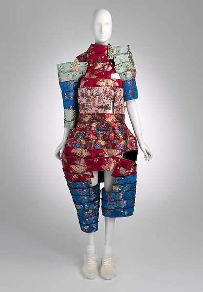
"Ensemble 2" - Comme des Garçons, Collection Automne/Hiver 2016-2017
"The White Slave" - Sculpture, 1913
Ensemble 1
Vêtement, coton, plastique ; métal ; mélange élasthanne, Rei Kawakubo pour Comme des Garçons, automne/hiver 2001-2002, France, Dimensions variables, The Met, 2004.188a-c
Les pièces suivantes appartiennent à la maison de design Comme des Garçons, japonaise et reconnue pour avoir profondément bousculé les codes de la mode. La maison revendique une esthétique de l'imperfection et un anticonformisme radical, visible dans l'usage de coutures apparentes et de matériaux inhabituels. De la collection Au-delà des tabous, l'Ensemble 1 détourne le soutien-gorge des années 1950, symbole de l'érotisation de la poitrine. Kawakubo inverse sa fonction en le plaçant à l'arrière du corps, visible et prolongé, critiquant l'équivalence sexiste entre décolleté et fesses. Cette transgression des normes occidentales rend l'œuvre volontairement taboue, dans la mode et l'art.
Ensemble 2
Vêtement, soie, polyester ; polyester, acrylique, nylon ; Rei Kawakubo pour Comme des Garçons, automne/hiver 2016-2017, Japon, Dimensions variables, The Met, 2016.616a-aaa
The White Slave
Sculpture, Matériaux non spécifiés, Abastenia St. Leger Eberle, 1913, États-Unis, Dimensions non spécifiées, Armory Show of the Association of American Painters and Sculptors (exposé initialement), Publieur de la photo : Upton Sinclair, New York and Pasadena (lieu d'exposition de la photo), Numéro non spécifié
Cette œuvre d'Abastenia St. Leger Eberle dénonce la prostitution forcée de jeunes immigrantes pauvres, alors désignée par l'euphémisme d'« esclavage blanc ». La sculpture représente une adolescente nue, offerte comme une marchandise, confrontant le spectateur à une violence, celle du destin tragique d'immigrantes contraintes à la prostitution pour survivre habituellement dissimulée. Le scandale provoqué par l'œuvre révèle le rejet d'une société qui préfère ignorer cette réalité plutôt que la voir exposée.
Sacrilège
Mais nous ne pouvons pas parler d'arts représentant des tabous sans mentionner Jérôme Bosch. Jheronimus Van Aken, dit Jérôme Bosch était un Peintre brabançon (Bois-le-Duc vers 1450-Bois-le-Duc 1516), qui dans un contexte profondément marqué par le mysticisme chrétien créa des œuvres "sacrilèges", dans lesquelles la religion se mêle aux péchés. Bosch donne à voir de manière explicite ce que la morale chrétienne cherche à dissimuler : la corruption, la tentation et la transgression, y compris chez les figures religieuses. À travers des allégories excessives et un bestiaire fantastique issu du Moyen Âge, il rend visible l'hypocrisie et les contradictions d'une société qui prône la vertu tout en occultant ses propres vices. En cela, son œuvre peut être perçue comme transgressive, voire avant-gardiste.
Allégorie de la débauche et du plaisir
Peinture à l'huile sur panneau (triptyque), Huile sur bois, Jérôme Bosch, 1495-1500, Pays-Bas, 0,314m × 0,349m, Yale University Art Gallery à New Haven, dans le Connecticut, Numéro non spécifié
Il s'agit du panneau gauche du Triptyque du vagabond, qui fut désassemblé, c'est pourquoi les différentes parties sont aujourd'hui séparées. Les autres panneaux sont La Nef des fous et La Mort de l'avare. Ce panneau développe une allégorie de la débauche et du plaisir, associée principalement à la gourmandise. Un homme obèse chevauche un tonneau flottant, entouré de figures livrées à l'excès, tandis qu'un couple s'abandonne à des épanchements lascifs sous l'effet de l'ivresse. Il est un exemple de ses œuvres mettant en lumière les péchés.
Les autorités
Les femmes invisibilisées
Cette section montre comment certains artistes donnent forme à ce que
les autorités préfèrent ignorer : la répression, la marginalité, la précarité.
Ici, se sont les femmes et leur sexualité, tabou de la société, qui sont mis en lumière.
A travers les œuvres de cette section, nous explorons la violence que subissent les femmes
lorsque leur sexualité ne leur appartient plus et ne deviennent qu'un objet de désir,
mais aussi lorsque les autorités répriment une sensualité pleinement assumée.
Les artistes n'hésitent pas à rendre visible ces vies bien réelles qui sont reniées.
Pourtant, en brisant les normes artistiques, ces œuvres d'art ont majoritairement été
censurées par les autorités car les artistes bravent un tabou. Comment les artistes dévoilent
les mécanismes sociaux qui produisent l'invisibilisation de la sexualité forcée ou de la sensualité
cachée des femmes ?
"La femme avec un perroquet" - Huile sur toile, 1866
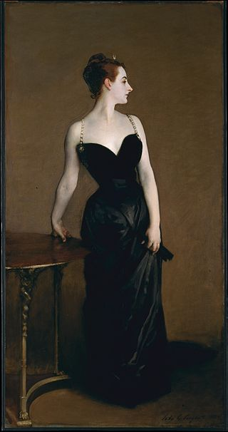
"Madame X (Virginie Amélie Avegno Gautreau)" - Huile sur toile, 1883–1884
Explication pour les enfants
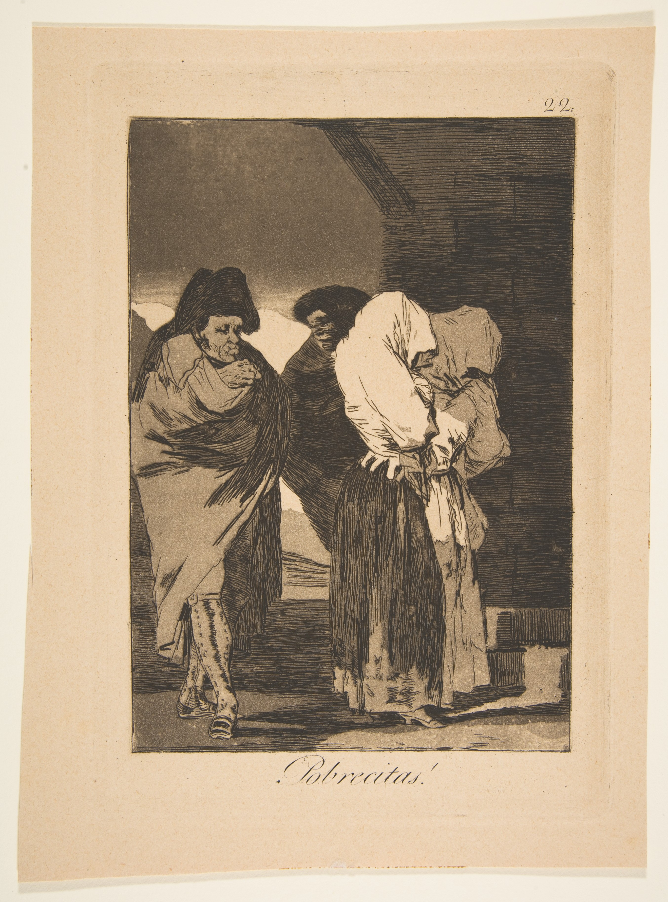
"Planche 22 des 'Los Caprichos ': Poor little girls!" - Planche, 1799
👋 Coucou les enfants !
Aujourd'hui, nous allons vous expliquer cette œuvre d'art qui s'appelle "Madame X (Virginie Amélie Avegno Gautreau)".
Vois-tu un défaut dans cette œuvre ? 🔎Non ? Laisse-moi t'aider 😀!
Quand le peintre a présenté son tableau aux big boss de la peinture, un détail qui existait avant a été enlevé : sa bretelle droite n'est plus dans la même position qu'avant! Il a dû repeindre sur cette partie car elle ne plaisait pas aux autorités. Son but était de remettre la bretelle qui pendouillait sur son bras avant, sur son épaule, car on voyait trop son épaule 🫣
Alors à ton tour ! Clique sur l'image à droite pour voir le détail avant et après la modification.
Vois-tu ce détail modifié ? 🫡
Bravo et à bientôt pour une nouvelle aventure !
Femme avec un perroquet
Peinture à l'huile sur toile, Huile sur toile, Gustave Courbet, 1866, France, 129.5 × 195.6 cm, Metropolitan Museum of Art, New York, 29.100.57
La nudité de la femme a été jugée scandaleuse et, bien que le tableau ait été officiellement accepté au Salon de Paris, il a été tenu à l'écart dans l'exposition. Les critiques et observateurs, agissant comme une forme d'autorité morale, ont dénoncé l'œuvre et limité sa visibilité auprès du public. Cette réception témoigne de la tension entre liberté artistique et normes sociales au XIXᵉ siècle, et illustre comment l'art pouvait être invisibilisé de manière informelle sans interdiction officielle.
Madame X (Virginie Amélie Avegno Gautreau)
Peinture à l'huile sur toile, Huile sur toile, John Singer Sargent, 1883-1884, Royaume-Uni, 208.6 × 109.9 cm, Metropolitan Museum of Art, New York, 16.53
Ce tableau représente une mondaine américaine à Paris. La pose audacieuse et la robe noire aux bretelles tombantes ont été jugées immorales. L'œuvre a été interdite au Salon de Paris, où elle devait être exposée. Ce scandale illustre les tensions entre liberté artistique, normes sociales et perception de la féminité à la fin du XIXᵉ siècle.
Planche 22 des 'Los Caprichos ': Poor little girls!
Gravure, Eau-forte et aquatinte, Francisco Goya, 1799, Espagne, 21.5 × 14.9 cm, The Metropolitan Museum of Art, New York, 18.64(22)
Issue de la série Los Caprichos, cette œuvre représente deux femmes entièrement couvertes, le visage dissimulé, escortées par des agents de la justice vers une prison. La scène suggère une critique de la répression sociale et de la marginalisation des femmes, notamment des prostituées, dans l'Espagne du XVIIIᵉ siècle. En raison de ses attaques contre les institutions religieuses, la noblesse et la société, la série a été retirée de la circulation sur ordre des autorités, sous l'influence de l'Inquisition. Bien que soumis à de fortes pressions, Goya n'a pas été directement puni ou emprisonné.
Les pouvoirs coloniaux
Cette section montre comment des pouvoirs coloniaux ou administratifs ont cherché à restreindre ou faire disparaître des pratiques culturelles entières. Interdiction des cérémonies, confiscation d'objets rituels ou appropriation muséale : chaque œuvre témoigne d'un geste d'autorité visant à supprimer des savoirs et des traditions jugés inacceptables. En rendant ces cultures illégitimes ou en vidant leurs objets de leur sens, les autorités ont fabriqué un invisible forcé. L'invisibilisation de cultures entières au profit de la culture occidentale. La présence de ces œuvres ici rappelle que ces pratiques n'ont survécu qu'en dépit de ces tentatives d'effacement.
"Nkisi Nkondi" - Figure rituelle, XIXe
"Masque d'homme parlant" - Masque, 1868–1900
"Fragment de bordure d'un manteau brodé" - Tissu, 450–175 avant J-C
Nkisi Nkondi (Figure rituelle)
Sculpture, Bois, fer et kaolin, Artiste inconnu, XIXe siècle, Kakongo (actuelle République du Congo et province de Cabinda, en Angola), 86 × 34.9 × 27.9 cm, Brooklyn Museum, 22.1421
Un nkisi est un objet investi d'une force spirituelle. Il sert d'intermédiaire entre le monde des vivants et celui des esprits / ancêtres. Ce n'est pas une idole : l'objet contient une puissance, il ne la représente pas. À l'époque coloniale, les Africains protégeaient activement leurs propres cultures. L'iconoclasme était une façon d'exercer leur pouvoir, en les supprimant les colons supprimaient la substance magico-religieuses qui donnaient du pouvoir aux nkisi. Les informations d'archives montrent que les nkisi, aujourd'hui présents dans les collections d'autres musées, ont été soumis à des actes d'iconoclasme similaires.
Masque d'homme parlant pour cérémonie hivernale
Masque, Bois et cuivre, Artiste inconnu, 1868–1900, Canada (Tlingit, or Haida, or Gwa'sala Kwakwaka'wakw), 32.1 × 21 cm, Brooklyn Museum, 05.589.7803
Les cérémonies du potlatch, durant lesquelles ce masque était porté, ont été interdites par le gouvernement fédéral du Canada entre 1885 et 1951. Cette interdiction était prévue par la Loi sur les Indiens. Elle visait à supprimer certaines pratiques culturelles autochtones, comme le potlatch et la danse du Soleil. Cette politique a entraîné des arrestations, la confiscation d'objets cérémoniels et des peines de prison. Elle s'inscrivait dans une démarche d'assimilation destinée à faire disparaître des traditions autochtones jugées incompatibles avec les valeurs capitalistes et chrétiennes.
Fragment de bordure d'un manteau brodé
Textile, Coton et poils de camélidés, Artiste inconnu, 450–175 avant J-C, Pérou, 17.1 × 105.1 cm, The Metropolitan Museum of Art, 1994.35.120
Ce textile funéraire a été exhumé illégalement au XIXᵉ siècle, à une période où de nombreux objets précolombiens ont été retirés de leurs contextes d'origine. Initialement conçu pour accompagner les défunts dans l'au-delà, ce manteau possédait une forte dimension rituelle et symbolique. Son extraction et sa circulation sur le marché de l'art ont entraîné la perte de sa fonction sacrée. Transformé en objet de collection, il témoigne d'un processus de désacralisation et de marchandisation de l'art précolombien, lié aux pratiques coloniales et à l'intérêt croissant des collectionneurs occidentaux.
Rébellion
Dans cette dernière section, les artistes recherchent explicitement le pouvoir en défiant les normes émises par les autorités. Toute déviation aux valeurs que souhaitent imposer ces régimes était réprimée. Certains ont contourné la loi, d'autres ont été réduits au silence. En jouant avec les codes, ils dénoncent comment les autorités restreignent leur liberté créative, d'expression ou même leur liberté fondamentale. Ici nous pouvons voir comment l'art se place en position de rébellion face à un régime totalitaire. La censure émise par ces régimes n'a pas étouffé l'art et bien au contraire l'a affûté. Ces œuvres montrent comment l'art persiste malgré les contrôles et rend visible ce que le pouvoir tente de rendre invisible.
"Graffiti sur le mur d'un entrepôt" - Impression sur bois, 1847
Impression sur bois, Encre sur papier, Utagawa Kuniyoshi, 1847, Japon, 25.4 × 38.1 cm, Brooklyn Museum, 2016.12
Au début des années 1840, le gouvernement japonais adopte des lois restreignant la liberté d'expression dans les arts. La représentation directe d'événements contemporains et l'identification des acteurs sont alors interdites. Utagawa Kuniyoshi contourne ces règles avec ingéniosité en dissimulant des portraits d'acteurs dans une scène de graffitis. Grâce à un jeu visuel et linguistique subtil, il critique la censure tout en obtenant l'approbation officielle des autorités.
El Derecho de Vivir en Paz (le droit de vivre en paix)
Chanson, Enregistrement audio, Victor Jara, 1971, Chili, Durée: 5:14, Archives diverses, Numéro non spécifié
Cette chanson est devenue un hymne à la paix et à la justice sociale au Chili. Après le coup d'État de Pinochet en 1973, la chanson a été interdite par la dictature. Victor Jara a été arrêté, torturé et assassiné pour son engagement politique. L'œuvre symbolise la lutte pour les droits humains et reste un puissant témoignage de résistance face à l'oppression.
Turbulent
Vidéo, Installation vidéo à deux canaux, Shirin Neshat, 1998, Iran, Durée: 10:00, Collections diverses, Numéro non spécifié
Shirin Neshat met en scène deux interprètes placés face à face : Shoja Azari incarne la figure masculine, tandis que Sussan Deyhim, chanteuse et compositrice iranienne, représente la figure féminine. Le dispositif oppose deux performances vocales contrastées, révélant une profonde asymétrie entre les rôles assignés aux hommes et aux femmes en Iran. À travers cette confrontation musicale, l'artiste propose une métaphore puissante des injustices liées au genre et des rapports de pouvoir culturels, soulignant le silence imposé aux femmes et les formes de résistance qu'elles développent.
Cette exposition a été conçue par des étudiants du CPES Science des données, Arts et Culture en lien avec le lycée Louis-le-Grand et l'Université PSL. Le projet a été réalisé dans le cadre du cours d'Histoire des Arts de Léa Saint-Raymond.